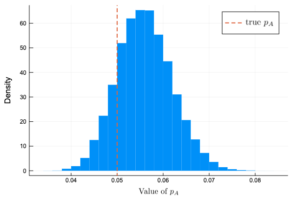
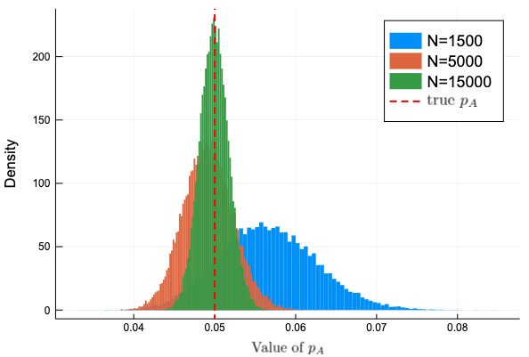
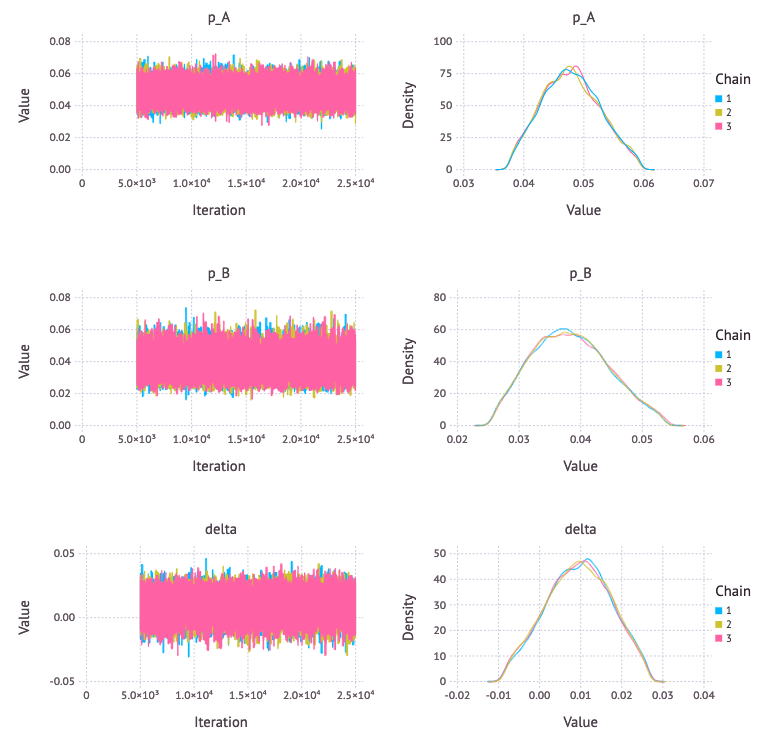
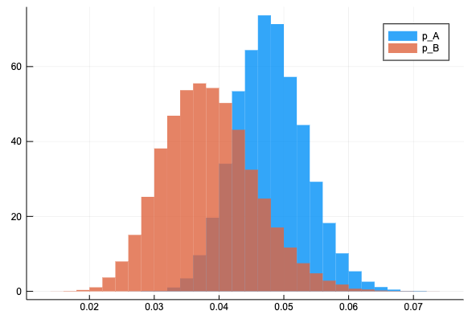
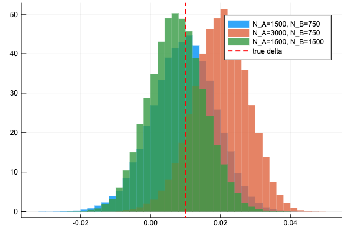
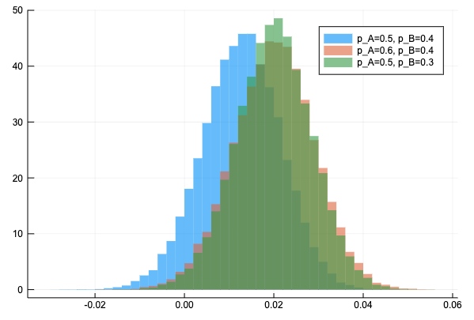

今回はMambaを使って、「Pythonで体験するベイズ推論」の「例題 : ベイズ的 A/B」 をモデリングする。
例題 : ベイズ的 A/B テスト
A/Bテストの例題を解いてみよう。
サイトAを見せられたユーザーが最終的にコンバージョンにつながる確率を \( p_A \)と仮定し、\( N \) 人がサイトAを見せられて、そのうち \( n \) 人がコンバージョンにつながったとする。
まずはベルヌーイ分布を使って、\( N \) 回の試行をシミュレートする。
# 定数をセット
p_true = 0.05
N = 1500
occurrences = rand(Bernoulli(p_true), N)
Mamba.jlで推論アルゴリズムを作成すると、次のようになる。\( p \) の事前分布は \( [0, 1] \) の一様分布に従うとしている。
model0 = Model(
obs = Stochastic(1,
(p, N) ->
UnivariateDistribution[Bernoulli(p) for _ in 1:N], false),
p = Stochastic(() -> Uniform()),
)
モデルは、等価な次の形で書いた方が単純になってわかりやすいかもしれない。
model0 = Model(
obs = Stochastic(1, p -> Bernoulli(p), false),
p = Stochastic(() -> Uniform()),
)
観測データと初期値を作ってサンプリングし、
data0 = Dict{Symbol, Any}(
:obs => occurrences,
:N => N,
)
inits0 = [
Dict{Symbol, Any}(
:obs => occurrences,
:p => rand(Uniform()),
) for _ in 1:3
]
scheme0 = [NUTS(:p)]
setsamplers!(model0, scheme0)
sim0 = mcmc(model0, data0, inits0, 20000, burnin = 1000, thin = 1, chains = 3)
事後分布のヒストグラムをプロットすると次のようになった。\( N \) の数が小さいのか、真の値と分布のピークは多少ずれている。
histogram(vec(sim0[:, :p, :].value), bins = 30, normalize = :pdf,
linecolor = :transparent, label = "", xlabel = L"\mbox{Value of }p_A", ylabel = "Density")
plot!([p_true], seriestype = :vline, linestyle = :dash, linewidth = 2,
label = L"\mbox{true }p_A", legendfontsize = 12)

\( N \) の数を増やしてみる
観測データ数を増やして変化を確認してみよう。\( N=1500, 5000, 15000 \) の3種類を試す。
ab_sim = []
Ns = [1500, 5000, 15000]
for n in Ns
ab_occur = rand(Bernoulli(p_true), n)
ab_data = Dict{Symbol, Any}(
:obs => ab_occur,
:N => n,
)
ab_inits = [
Dict{Symbol, Any}(
:obs => ab_occur,
:p => rand(Uniform()),
) for _ in 1:3
]
push!(ab_sim, mcmc(model0, ab_data, ab_inits, 20000,
burnin = 1000, thin = 1, chains = 3))
end
Plots.plot()
for (i, sim) in enumerate(ab_sim)
histogram!(vec(sim[:, :p, :].value), normalize = :pdf,
linecolor = :transparent, label = @sprintf("N=%d", Ns[i]),
xlabel = L"\mbox{Value of }p_A", ylabel = "Density")
end
Plots.plot!([p_true], seriestype = :vline,
linestyle = :dash, linewidth = 2, linecolor = :red,
label = L"\mbox{true }p_A", legendfontsize = 12)

\( N \) を大きくすると分布の裾野が狭くなり、分布の中心が真の値 \( p_A \) に近づいている。
AとBを一緒に
サイトA, Bに対し、未知数である真のコンバージョン率 true_p_A, true_p_B はそれぞれ0.05と0.04とし、観測データ数 N_A, N_B は1500, 500として観測データを作成する。
true_p_A = 0.05
true_p_B = 0.04
N_A = 1500
N_B = 750
observation_A = rand(Bernoulli(true_p_A), N_A)
observation_B = rand(Bernoulli(true_p_B), N_B)
同時に推論するモデルは以下のようになる。新しく \( p_A \) と \( p_B \) の差を表す Logical ノード delta が増えた以外は一つだけ推論する場合をコピーペーストして二つにしただけ。
model1 = Model(
obs_A = Stochastic(1, p_A -> Bernoulli(p_A), false),
obs_B = Stochastic(1, p_B -> Bernoulli(p_B), false),
delta = Logical((p_A, p_B) -> p_A - p_B),
p_A = Stochastic(() -> Uniform()),
p_B = Stochastic(() -> Uniform()),
)
与える観測データと初期値は下のようにした。\( p_A \) と \( p_B \) の初期値は \( [0,1] \) からランダムで取った。
data1 = Dict{Symbol, Any}(
:obs_A => observation_A,
:obs_B => observation_B,
)
inits1 = [
begin
p_A = rand(Uniform())
p_B = rand(Uniform())
Dict{Symbol, Any}(
:obs_A => observation_A,
:obs_B => observation_B,
:p_A => p_A,
:p_B => p_B,
:delta => p_A - p_B,
)
end
for _ in 1:3
]
scheme1 = [NUTS([:p_A, :p_B])]
setsamplers!(model1, scheme1)
sim1 = mcmc(model1, data1, inits1, 25000, burnin = 5000, thin = 1, chains = 3)
p1 = Mamba.plot(sim1[:, [:p_A, :p_B, :delta], :], legend = true)
Mamba.draw(p1, nrow = 3, ncol = 2)

\( p_A \) と \( p_B \) の事後分布と一つの図にプロットして分布の裾の広さを比較する。Bの方がサンプル数が少ないので裾が広い。
histogram(vec(sim1[:, :p_A, :].value), normalize = :pdf, bins=30, fillalpha = 0.8, linecolor = :transparent, label = "p_A")
histogram!(vec(sim1[:, :p_B, :].value), normalize = :pdf, bins=30, fillalpha = 0.8, linecolor = :transparent, label = "p_B")

サイトA, サイトBのデータを2倍にした時の delta の分布の変化を見ると、このようになった。もともとの delta の分布が真のデルタの値から近い値を中心に当たっていたため改善されている感じがわかりづらいが、データを2倍にすると裾が狭くなっている。
同様の改善効果があるのなら、N_B を増やす方が良い(N_B を2倍にするとデータサイズが750増加するが、N_A を2倍にするとデータサイズが1500増加するため)

真の \(p_A, p_B \) を動かして delta の分布を見ると次のようになる。
